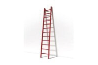

| Questions |
Key |
Answer |
|
| Listening Part 1: Listening to Problem Solving - 1 |
She wants to redecorate her new place. |
|
|
| Listening Part 1: Listening to Problem Solving - 2 |
the woman’s landlord |
|
|
| Listening Part 1: Listening to Problem Solving - 3 |
some curtains |
|
|
| Listening Part 1: Listening to Problem Solving - 4 |
He likes them very much. |
|
|
| Listening Part 1: Listening to Problem Solving - 5 |
She dislikes the colour of its walls. |
|
|
| Listening Part 1: Listening to Problem Solving - 6 |
 |
|
|
| Listening Part 1: Listening to Problem Solving - 7 |
His ladder is broken. |
|
|
| Listening Part 1: Listening to Problem Solving - 8 |
She now has everything that she needs. |
|
|
| Listening Part 2: Listening to a Daily Life Conversation - 1 |
at the woman’s desk |
at a nearby restaurant |
|
| Listening Part 2: Listening to a Daily Life Conversation - 2 |
She is part of the team. |
Her birthday is today. |
|
| Listening Part 2: Listening to a Daily Life Conversation - 3 |
She has never eaten Italian food. |
She doesn’t like trying new food. |
|
| Listening Part 2: Listening to a Daily Life Conversation - 4 |
It’s the tradition that she knows. |
It’s the company’s monthly event. |
|
| Listening Part 2: Listening to a Daily Life Conversation - 5 |
She will join them today. |
|
|
| Listening Part 3: Listening for Information - 1 |
to learn what work she wants done |
to show her the repairs he completed |
|
| Listening Part 3: Listening for Information - 2 |
to have the work completed soon |
to dust the area after sanding |
|
| Listening Part 3: Listening for Information - 3 |
repaired the damaged wall |
bought an electric sander |
|
| Listening Part 3: Listening for Information - 4 |
The new floor would look better. |
The estimate will be more accurate. |
|
| Listening Part 3: Listening for Information - 5 |
preparing meals in a dirty area |
whether she measured correctly |
|
| Listening Part 3: Listening for Information - 6 |
within one week |
by the end of day |
|
| Listening Part 4: Listening to a News Item - 1 |
slip into a park. |
slip into the neighbour’s yard. |
|
| Listening Part 4: Listening to a News Item - 2 |
buy her a new slide. |
buy her a new slide. |
|
| Listening Part 4: Listening to a News Item - 3 |
pleased. |
excited. |
|
| Listening Part 4: Listening to a News Item - 4 |
knocked a tree onto the slide. |
covered the artist's work in mud. |
|
| Listening Part 4: Listening to a News Item - 5 |
build a new climbing structure. |
build a new climbing structure. |
|
| Listening Part 5: Listening to a Discussion - 1 |
Their workspace has been arranged differently. |
Their company has rented out office space. |
|
| Listening Part 5: Listening to a Discussion - 2 |
that meetings will be more difficult to arrange |
that he will no longer work with the same people |
|
| Listening Part 5: Listening to a Discussion - 3 |
those who work in the office every day |
those who work in the office every day |
|
| Listening Part 5: Listening to a Discussion - 4 |
Space will be used more efficiently. |
Teams will be able to work together. |
|
| Listening Part 5: Listening to a Discussion - 5 |
It has acquired more business contracts. |
It has acquired more business contracts. |
|
| Listening Part 5: Listening to a Discussion - 6 |
reduced team discussions |
irregular work hours |
|
| Listening Part 5: Listening to a Discussion - 7 |
They were not consulted about the changes. |
They were not working with clients before. |
|
| Listening Part 5: Listening to a Discussion - 8 |
They've agreed on a workable solution. |
They've grasped the new system well. |
|
| Listening Part 6: Listening for Viewpoints - 1 |
quite proud of the health-care system. |
|
|
| Listening Part 6: Listening for Viewpoints - 2 |
health care generates a heavy tax burden. |
|
|
| Listening Part 6: Listening for Viewpoints - 3 |
it monopolizes health service provision. |
|
|
| Listening Part 6: Listening for Viewpoints - 4 |
wait-lists will become shorter. |
|
|
| Listening Part 6: Listening for Viewpoints - 5 |
citizens are entitled to choose their service providers. |
|
|
| Listening Part 6: Listening for Viewpoints - 6 |
provide health screening and diagnostic services. |
|
|